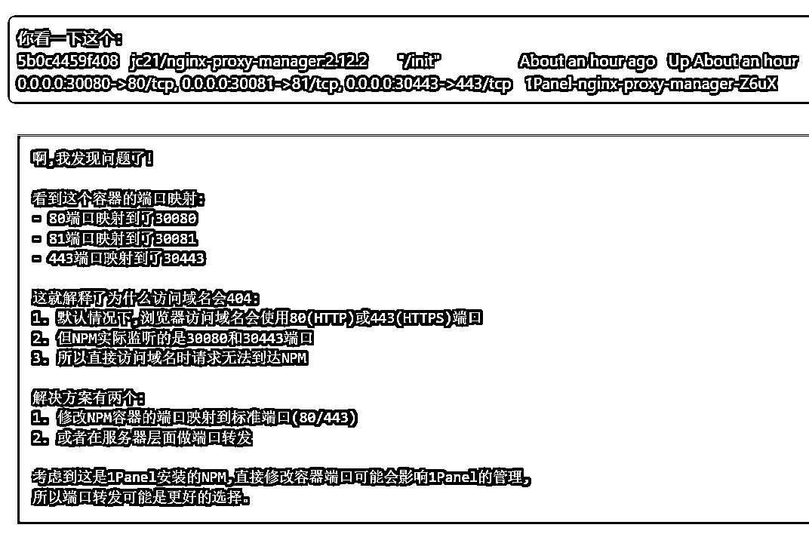
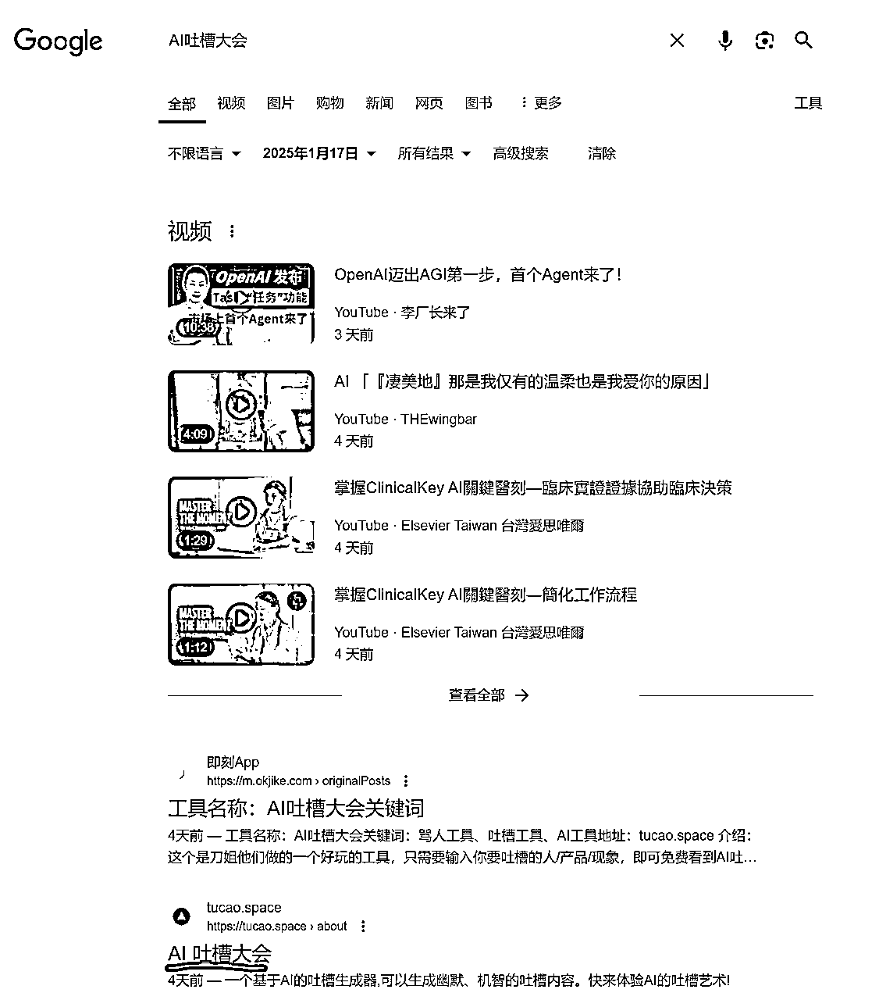

来源：https://ktnwm6ohjn.feishu.cn/docx/GvqJdkriyoFdFJxiETCcvC8ynQd
圈友们好哇，我是土豆君，一个全栈程序员，很惭愧去年没做几个产品，今年干起来~
这个产品源于一次偶然的契机。当时 @黄小刀 刀姐在传术师群里分享了一个有趣的GPT吐槽回复，引起了亦仁老大的关注和兴趣。
亦仁老大表达了想听听AI对自己的吐槽的想法，由此激发了产品的灵感。
随后，刀姐提出想用两天时间开发一个H5网页。作为一名开发者，我觉得这个太简单了，哪里需要两天，一小时就够了，我也觉得这个玩具好玩，就跟刀姐确认了下，花了一小时做了个Demo版本~
这就是我交付了第一个版本，效果在右图。
但这就完了么？并没有。这个简约风格的设计在刀姐看来太丑陋了，不适合做吐槽，刀姐想象的UI更偏向游戏性。于是找到圈友@YolyArk百合（负责UI设计）和@陈财猫（提供Prompt和后端API支持）一起协作，我们组建了一个高效的开发团队。
最终的产品已经上线，欢迎访问 https://tucao.space 体验。
值得一提的是，"AI吐槽大会"这个产品名称其实最初是由亦仁老大提出的，与他此前发布的两篇AI吐槽相关帖子遥相呼应。

好了，引言介绍完了，介绍引言就是要说明这款产品的前世今生。 以及我为什么会去参与到这个产品中。
尽管AI吐槽大会源于微信群内需求，但市面上已有类似产品。主要包括：
这是一个IDE平台，支持用自然语言构建AI Agent。其中广受关注的推特罗伯特功能，能够调用Claude分析用户的推文，生成人格吐槽报告。
量子位的报道：https://www.qbitai.com/2024/08/177145.html
由面包多创始人王登科开发，曾在2024年1月的QQ群内爆火。然而受限于腾讯的链接屏蔽，产品流量快速下滑，据similarweb数据显示，2024年12月访问量仅为33.9K。
这是他当时的复盘：https://mp.weixin.qq.com/s/DQDQX9Bomnx6ScS6dlGdVQ
简单做了个竞品调研，接下来就开始做开发了。做这款产品的初心主要还是刀姐想做，我想尝试合作试试，因此我的分享主要还是基于怎么去实现这个Idea，以及总结下一些经验。

初版原型MVP开发采用了一种高效的方案。我使用 bolt 平台结合特定 Prompt，快速搭建了基础UI框架。
参考的刘小排老师文章：https://scys.com/articleDetail/xq_topic/4848511545851418
里面提到的 Prompt如下，输入到 https://bolt.new 5分钟搭建网页UI
1. 技术栈：用纯粹的HTML + TailwindCSS来做 2. 核心功能：我要做一个运势网站，用户填入自己的姓名、选择生日，点击按钮，就可以就行运势计算。运势计算具体算法我不管，你帮我完成，但是要算出来让用户感觉专业、有理有据、愿意付费。 计算出来的运势至少要包括运势评级、运势分数、宜、忌、理由等等。 3. 功能区域：你要有完整的header,hero, testinoials, faq, features, pricing, how it works ,footer 区域。网站的版权所有人是刘小排，联系方式bourneliu66@gmail.com，其他内容需要编写得专业、真实。 4. 网站文案：所有网站上的文案内容，我要求你使用中文。关于这个运势计算网站，你需要强调我们是结合东方玄学、紫微斗数、易经、星座等等，强调中西方结合。 5. 网站风格：网站配色和风格需要现代化、高级，类似于苹果官网的风格。网站需要自适应各种屏幕尺寸。
我借鉴了这段 Pormpt，并改造了一下，搭建出AI吐槽生成器。它可以直出UI效果只是没有API功能。
随后我把代码下载下来，通过Cursor添加API功能，花费几小时的对话时间完成了Cloudflare Page的部署适配，最终在 https://ai-tease.pages.dev/ 上线了可用版本。
所以你可以看得出来目前搭建一个网站的MVP原型是比较容易的的。
然而后面我们在需求评审会议上，这个版本因UI风格与功能单一未能通过。这也反映出个人开发和团队协作在产品迭代策略上的差异。
之后我根据那天讨论后的需求分别尝试过用 https://bolt.new/ 和 Cursor 来搭建第一版网站。分别尝试了两个工具，其实就是为了证明，是不是搭建初版UI一定要要 Bolt？Cursor 有了 Agent 模式之后能不能搭建？
输入改造好的提示词，右边是效果图：
输入一样的提示，使用 Agent 模式。
Cursor 的 Agent模式，意思是输入你的需求可以自动执行多次（最多25次），自动去完成需求。
期间也需要手动回车下确认运行命令。注意右图中命令行创建 Nextjs 项目需要手动选择 No/Yes，不确认命令就不会继续执行，一般选择默认就行。
执行完成后可以运行测试。运行发现网页或代码有报错，二话不说把错误粘贴过来，再次执行 Agnent，反复两三次后得到一个能运行的版本。
这是运行出来的效果，和 Bolt 的效果基本一致？所以我觉得产品原型用 Bolt 和 Cursor 搭建都是OK的，只是Cursor可能会有些报错需要稍微自行解决下。
搭建出初版网站之后，如果没有UI需求那就可以继续开发功能了。但因为我们这个产品有UI设计师，那么就需要根据UI设计的图片来适配网站。
这里其实我至少花了2天时间都在用 Cursor 适配这个UI图，非常的繁琐。这里我尝试了很多方法，因为想要用AI来自动适配这个图片样式其实是比较困难的，加上这个图片不是用 Figma 这类设计工具做的，使用PS切图的，因此适配UI图也只能按照传统的流程，一点点适配，一个元素一个元素适配，开发的效率就低很多了，加上还需要解决H5和网页的自适应问题。
现在复盘的话，如果要用AI快速上线第一版网站，最好使用模板UI；如果有需要定制UI，尽量让UI设计去适配网站基础设计，这样可以直接换图就简单很多。而不是反过来像传统开发统流程一样，效率就提不起来。
我认为利用Cursor来开发产品，能开发到到什么程度取决于使用者本身的技术能力。
我们大部分时候能看到的只是网站的UI效果，但我们很难看到网站的技术问题，这个时候可以尝试先询问AI再让AI执行的方法。
我这里举个例子，我在做这个项目的时候，需要用到存储数据，也需要考虑怎么部署项目，很多技术方案我也不熟悉，就会直接询问，然后再让Claude来修改，这样我才能确保我发给Claude的命令是准确的。
再举个例子，我当时发布网站的时候，还遇到一个问题，网站域名访问为404，一直不清楚为什么，通过与Claude不断对话，最终才让Claude发现了问题原因：Nginx的80、443端口没有正确映射，必须映射这两个Http端口才能正常解析域名。

对了你有没有注意到，截图里面Claude回答会先思考问题再解答？这是因为我用了一个系统提示词，让Claude的回复会先给出思考再给出答案，用来对话提问效果挺不错。
这个提示词是开源的，提示词网址：
https://github.com/richards199999/Thinking-Claude/blob/main/model_instructions/v5.1-extensive-20241201.md
提示词的使用介绍可以参考卡兹克的这篇文章：
https://mp.weixin.qq.com/s/IAKD0FfcYehs5FsDkLbTJQ
开发完成之后，与克劳德对话让它补充文档和Docker部署脚本：

当然，Docker部署测试也会遇到问题，需要把错误再粘贴过来让Claude改进，可能也会需要反复对话多次。
自己必须要看得到懂Claude写的文档，如果看不懂，应该让Claude继续补充文档，这样这个项目的细节自己才是清楚的，我认为只能让AI做自己懂的事情。
甚至，我还让Cursor帮我写了个打包脚本，同样也要补充文档，没有文档自己也看不懂不会使用。

做完以上这些，就需要发布了。
这个项目我选择部署在服务器上，因为这个项目有后端API，前后端一起用Docker部署在服务器更方便。也不会有Serverless（Vercel, Netlify, Cloudflare Page...）部署时的一些限制。
服务器面板我没有使用宝塔，而是用的开源平替1Panel: https://1panel.cn ，个人推荐。
这是官方文档，直接运行一个脚本根据提示不断回车就行了：
https://1panel.cn/docs/installation/online_installation
界面是这样子
我在面板装了一个 Nginx Proxy Manager，用来做域名的端口映射和自动申请https证书。
界面如图
Nginx 的配置很简单
购买域名后是使用Cloudflare解析的DNS，一般都使用它。这里我还开启了小云朵，用了Cloudflare的CDN。
网站上线后还需要知道流量有多少，所以需要接入数据统计，一般我们都会接入 GA（Google Analytics 4），现在是 GA4。接入的时候，入口我找了半天没找到，后面在油管搜到一个很详细的GA4教程：
https://www.youtube.com/watch?v=UtDPmhCKx3Qa
谷歌GA注册入口：
https://marketingplatform.google.com/about/analytics/
然后根据视频一步步操作，拿到这个ID就可以在网站配置了：
至于怎么在网站上配置，同样直接问 Claude 就行。
除了接入GA4的统计，我还接入了Umami（https://umami.is）的统计，原因是GA数据很全但不直观，而使用开源GA平替Umami数据更直观，但统计的数据肯定没有GA多，所以两者结合一下。
Umami 部署很方便，可以直接部署在 Vercel 上，使用Vercel自带的数据库。文档： https://umami.is/docs/guides
可以对比一下两者的数据统计差异：
Google Analytics 4
Umami
网站在1月17号上线的，至于为什么一上线就有2K多的流量，待会再说~
网站上线后要让搜索引擎知道一般需要主动提交。而我们这个网站其实当时还没提交到 Google，就主动先收录了，可能是因为发布那天获得了2K+的流量吧。
提交的方式，在搜索引擎输入 site:域名，就能找到提交入口。

提交后还需要给网站生成 robots.txt 和 sitemap.xml 文件方便搜索引擎爬取网页，具体可以问 Claude 如何生成。
网站上线后，需要流量冷启动。一般的情况网站都会需要SEO，会从外链开始，也就是找到一些内容网站，发布自己的产品链接，可以更快的让谷歌索引和提升关键词排名。
而我们其实没有注重SEO，我们的方式是在当天晚上由刀姐进行了一场直播，在线演示AI吐槽大会。通过这样的方式，获得了2.2K的冷启动流量和谷歌主动收录网站。

这是1月17日直播那天网站的流量数据~

产品上线首日即获得2.2K的流量，这得益于刀姐的社群直播。数据显示，访问主要来自微信移动端用户。
产品的社交属性(生成卡片、便于传播)以及二维码扫码机制，都为流量增长提供了有力支持。甚至那天直播曹大也在玩这个AI吐槽大会。
经过了第一天的刀姐直播后，目前网站每天有几百的流量访问，算是完成了冷启动吧？下一步我觉得是要考虑这个产品方向要怎么做。
而基于目前的发展态势，我认为产品存在两个潜在的发展方向：
方向一：社交传播路线：给用户提供发泄情绪价值，通过流量实现广告变现。
方向二：付费分析服务：面向自媒体博主提供专业的账号吐槽分析服务。
这两个方向我更看好方向二，原因在于之前在群里我观察到大家普遍的需求都是想知道AI怎么吐槽自己，比如亦仁老大~

如果决定方向二，我的推广思路是，先找到各类自媒体大V博主，邀请他们做免费的吐槽服务；或者自运营产品账号，每日更新吐槽大V的产品卡片，通过这种方式去传播这个产品。
这个思路和那个 Wordware AI产品有点类似，通过运营推特账号罗伯特，先吸引到大家的关注，后面开启了付费墙。
不知道圈友们怎么看，欢迎给我们提供宝贵的建议~